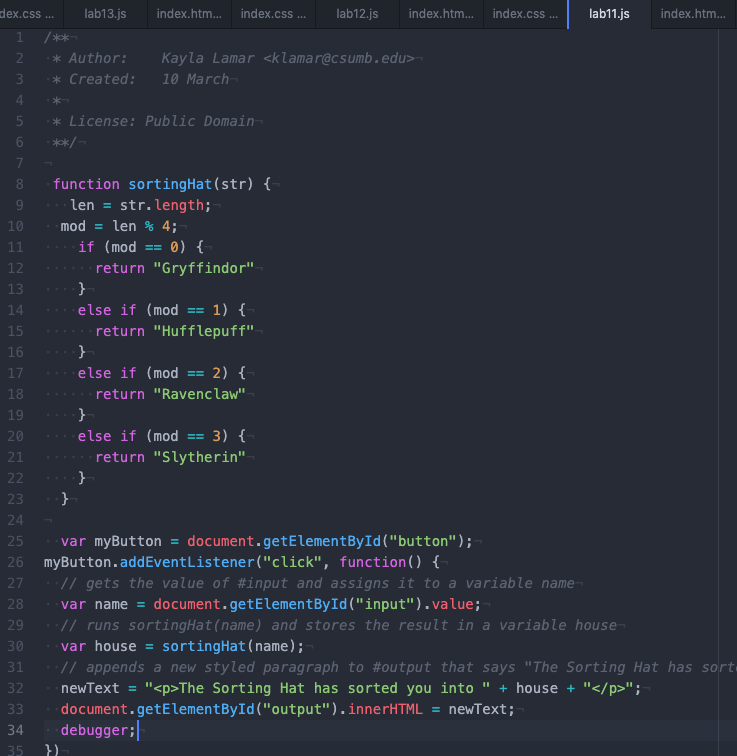
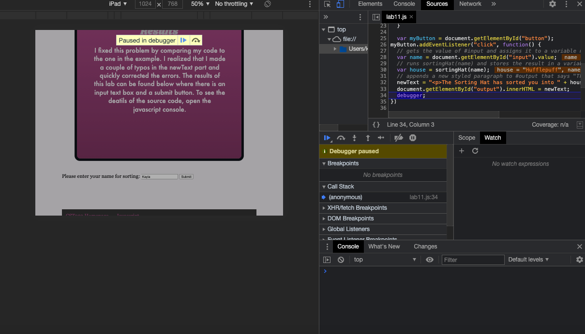
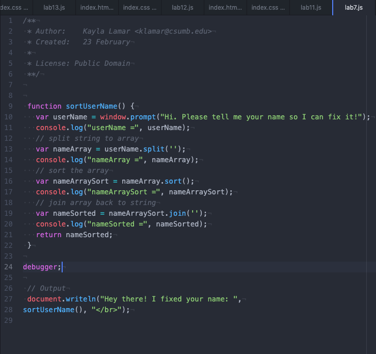
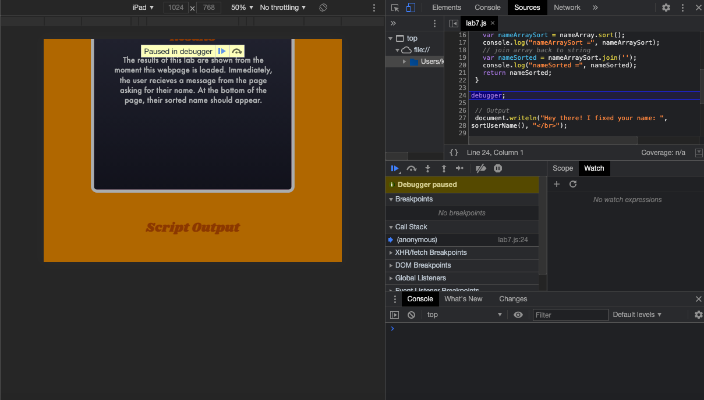

It was challenging for me to display the screenshots I took of the results on this webpage. I struggled for a bit, and it definitely proved to be quite the challenge. As for the debugging portion of the lab, everything went smoothly. So, that wasn't too challenging.
With this lab, I had a problem with adding the screenshots to my website. When I put the screenshots in, there were many problems I didn't like. The images were stacked instead of side by side. The screenshot captions were scattered around the images. They were too small, not centered, and the div couldn't fit them. I looked up multiple possible solutions and even looked back at source codes for past labs from CST351. But nothing was working.
Eventually I found out about table tags. Once I put these into my html file, the images actually appeared side by side! I centered the images by adjusting the margin values and width percentages. The only thing I couldn't figure out -and didn't have any mental energy left to try and figure out- was how to make the output images on the left bigger. The results of my work can be found below where it says "Debugging". There are also 2 sets of images for each lab that I decided to debug.
For each of my past labs, I had already checked the javascript console to make sure there weren't any reported errors. If I found any, I imediately fixed them before submitting the assignment. However, that does not mean there weren't any typos I might have missed. So, I decided to go back to lab 11 and check to see if there were any errors that could have been messing up the code. I added debugger to a line so it will pause and check the code. I proceeded to do the same thing for lab 7. Luckily, neither of the labs had any errors that needed to be corrected. The images below show the javascript code in Atom for each lab as well as how the webpages react with debugger in the code.
|  |  |
|  |  |